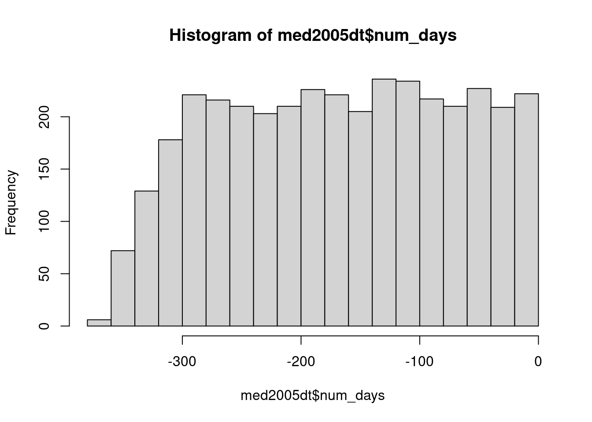

library(here)here() starts at /home/micsac/Teaching/Courses/r-programmingmed2005 <- readRDS(here("data", "med-2005-ex.rds"))Day 3, C
From the data, download and read in the file “med-2005-ex.rds”.
library(here)here() starts at /home/micsac/Teaching/Courses/r-programmingmed2005 <- readRDS(here("data", "med-2005-ex.rds"))lubridate package (try the function wday) to calculate the day of the week when the dispensation occurred. Do dispensations occur less frequently on weekends?library(lubridate)
Attaching package: 'lubridate'The following objects are masked from 'package:base':
date, intersect, setdiff, unionmed2005$day_of_week <- wday(med2005$date, label = TRUE)
table(wday(med2005$date, label = TRUE)) |> plot()table(wday(med2005$date, label = FALSE))
1 2 3 4 5 6 7
588 557 596 605 565 545 596 table(med2005$day_of_week %in% c("Sun", "Sat"))
FALSE
4052 binom.test(sum(med2005$day_of_week %in% c("Sat", "Sun")), nrow(med2005),
p = 2 / 7)
Exact binomial test
data: sum(med2005$day_of_week %in% c("Sat", "Sun")) and nrow(med2005)
number of successes = 0, number of trials = 4052, p-value < 2.2e-16
alternative hypothesis: true probability of success is not equal to 0.2857143
95 percent confidence interval:
0.0000000000 0.0009099706
sample estimates:
probability of success
0 table(month(med2005$date, label = TRUE)) |> plot()
dplyr or data.table to create a new variable that is the last dispensation for each individual during the year (using group_by then mutate or := with by). Then calculate the number of days between each dispensation and the last one. What is the average number of days?library(data.table)
Attaching package: 'data.table'The following objects are masked from 'package:lubridate':
hour, isoweek, mday, minute, month, quarter, second, wday, week,
yday, yearmed2005dt <- data.table(med2005)
med2005dt[, last_date := max(date),
by = .(pid)]
med2005dt[, num_days := as.numeric(date - last_date)]
med2005dt[num_days == 0, num_days := NA]
summary(med2005dt) pid date atc dose
Length:4052 Min. :2005-01-01 Length:4052 Min. : 0.0
Class :character 1st Qu.:2005-03-30 Class :character 1st Qu.: 119.0
Mode :character Median :2005-06-29 Mode :character Median : 274.0
Mean :2005-06-30 Mean : 393.9
3rd Qu.:2005-09-30 3rd Qu.: 537.2
Max. :2005-12-31 Max. :3378.0
day_of_week last_date num_days
søn:588 Min. :2005-04-28 Min. :-364.0
man:557 1st Qu.:2005-11-16 1st Qu.:-251.0
tir:596 Median :2005-12-08 Median :-165.0
ons:605 Mean :2005-11-28 Mean :-167.3
tor:565 3rd Qu.:2005-12-23 3rd Qu.: -84.0
fre:545 Max. :2005-12-31 Max. : -1.0
lør:596 NA's :400 hist(med2005dt$num_days)
library(dplyr)
Attaching package: 'dplyr'The following objects are masked from 'package:data.table':
between, first, lastThe following objects are masked from 'package:stats':
filter, lagThe following objects are masked from 'package:base':
intersect, setdiff, setequal, unionmed2005b <- med2005 |> group_by(pid) |>
mutate(last_date = max(date))
med2005b <- med2005b |> mutate(num_days = as.numeric(date - last_date))
med2005b$num_days[med2005b$num_days == 0] <- NA
summary(med2005b) pid date atc dose
Length:4052 Min. :2005-01-01 Length:4052 Min. : 0.0
Class :character 1st Qu.:2005-03-30 Class :character 1st Qu.: 119.0
Mode :character Median :2005-06-29 Mode :character Median : 274.0
Mean :2005-06-30 Mean : 393.9
3rd Qu.:2005-09-30 3rd Qu.: 537.2
Max. :2005-12-31 Max. :3378.0
day_of_week last_date num_days
søn:588 Min. :2005-04-28 Min. :-364.0
man:557 1st Qu.:2005-11-16 1st Qu.:-251.0
tir:596 Median :2005-12-08 Median :-165.0
ons:605 Mean :2005-11-28 Mean :-167.3
tor:565 3rd Qu.:2005-12-23 3rd Qu.: -84.0
fre:545 Max. :2005-12-31 Max. : -1.0
lør:596 NA's :400 hist(med2005b$num_days)
The “atc” variable contains the ATC code for the drug that was dispensed. This is a standardized classification system for drugs, see https://www.whocc.no/atc/structure_and_principles/.
grepl function with a pattern. 2. Are there any “invalid” ATC codes in the dataset?grepl("^J01",med2005$atc) |>head()[1] TRUE FALSE FALSE TRUE TRUE FALSEgrepl("^J01.{4}$",med2005$atc) |> table()
FALSE TRUE
2397 1655 ## replace
gsub("^J01.{4}$", "mydrug", med2005$atc) |>head()[1] "mydrug" "C10BX02" "C10BX03" "mydrug" "mydrug" "H05BX02"## check for invalid atcs
grepl("^[A-Z]{1}[0-9]{2}[A-Z]{2}[0-9]{2}$",
c(med2005$atc[1:5], "100", "J01DD09b")) [1] TRUE TRUE TRUE TRUE TRUE FALSE FALSE## no invalid atcs
grepl("^[A-Z]{1}[0-9]{2}[A-Z]{2}[0-9]{2}$",
med2005$atc) |> table()
TRUE
4052